쿨러 매뉴얼을 개정으로 고르고 미리 보기
왼쪽 메뉴 지식 아래 지식 관리를 누르세요. 매뉴얼 등록 칸이 나옵니다.
**제공 문서(받기)**의 첫 이름 HM-8_cooler-fan-manual.md를 누르면 내 컴퓨터로 내려받아지고, 브라우저 위쪽에 받은 파일이 뜹니다. 파일 선택을 누르고 다운로드 폴더에서 그 파일을 고르세요. 버튼 옆에 파일 이름이 뜨면 제대로 고른 것입니다.
담당자는 지식 관리자 그대로 둡니다.
아래 등록된 매뉴얼에는 쿨러 팬 매뉴얼이 처음부터 들어 있습니다. 그래서 등록할 문서에서는 새 문서 등록이 아니라 HM-8_cooler-fan-manual.md · 문서 개정을 고르세요. 새 문서로 넣으면 같은 매뉴얼이 둘이 되어 AI가 어느 쪽을 믿을지 헷갈립니다.
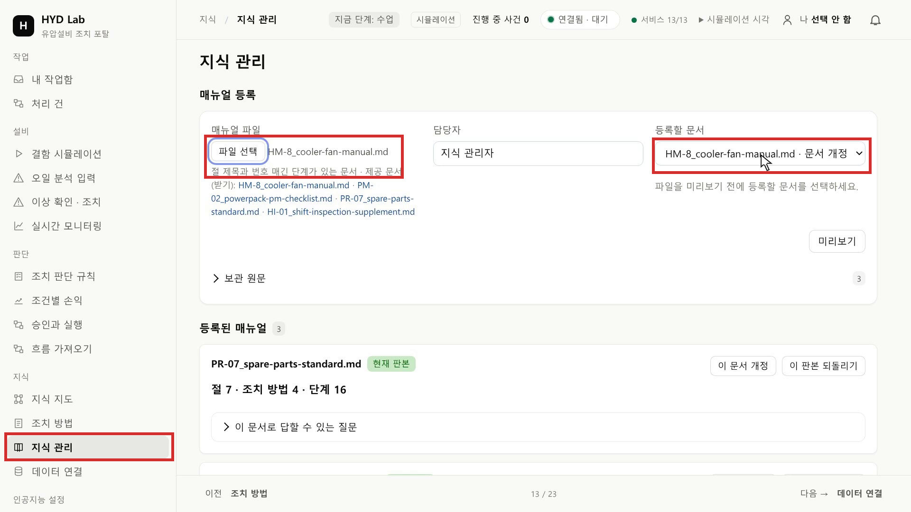
미리보기를 누르세요. 넣기 전에 포털이 파일을 제대로 읽었는지 먼저 봅니다.
확인: 맨 위 줄에 절 8개 · 절차 7개가 나옵니다. 매뉴얼의 큰 제목 하나가 절이고, 그 안에 번호를 매겨 적은 작업 순서가 절차입니다. 그 밑 검사 칸의 수정할 항목 있음은 매뉴얼이 틀렸다는 뜻이 아닙니다. 절차를 어느 고장에 쓰는지와 언제 꺼내 쓸지(후보 규칙)가 아직 비어 있다는 뜻이고, 이 두 가지는 뒤에서 AI에게 원문을 읽혀 채웁니다. 줄마다 붙은 접힌 칸은 몰라도 됩니다.
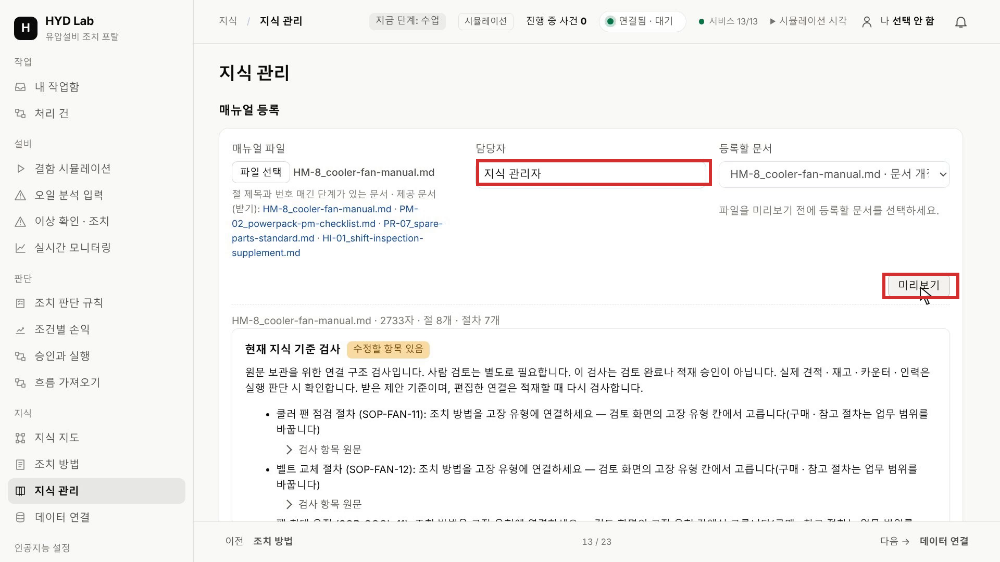
원문에서 판단 기준 먼저 읽기
AI가 정리해 온 것이 맞는지 맞춰 보려면 원문에 무엇이 적혀 있는지 먼저 알아야 합니다. 아래 추출 원문 전체 보기를 누르고, 나온 1쪽 전체를 펼치세요.
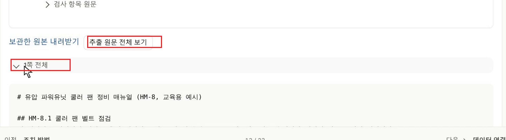
원문 칸을 내려 가며 아래를 차례로 찾으세요.
- 맨 위 두 절(팬 점검 · 벨트 교체)은 둘 다 현장 제어(LOCAL)로 바꾸는 데서 시작합니다. 사람이 손을 대는 동안 멀리서 기계가 움직이면 위험하기 때문입니다.
- 냉각 성능 판정 기준: 유온(기름 온도) 기준은 55 ℃, 냉각 효율(쿨러가 열을 빼내는 정도) 기준은 70 %입니다. 유온이 55 ℃를 넘고 냉각 효율이 70 % 밑이면 쿨러 냉각 성능 상실입니다. 이 두 숫자는 뒤에서 고장을 낼 때 화면에서 다시 봅니다.
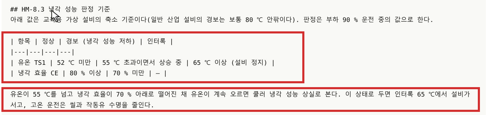
- 원인과 확인 증거: 원인은 쿨러 핀 오염(사전 확률 0.6으로 가장 흔함), 주변 온도 상승, 팬 구동 불량 셋입니다. 핀 오염과 팬 구동 불량은 팬 진동 0.9 mm/s로 가릅니다. 핀 오염이면 진동이 낮고, 팬 구동 불량이면 높습니다.
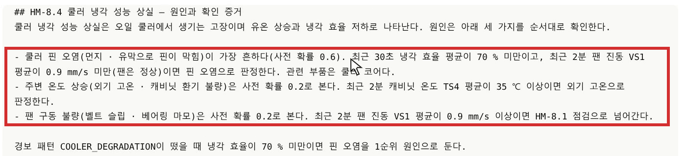
- 즉시 완화 조치: 원인은 두고 온도부터 낮추는 방법(팬을 세게 돌리거나 펌프 일을 줄이기)이고, 원격 조치는 PLC 운전 모드가 REMOTE_AUTO일 때만 합니다. 절차마다 끝에 생산이 그대로인지 줄어드는지도 적혀 있습니다.
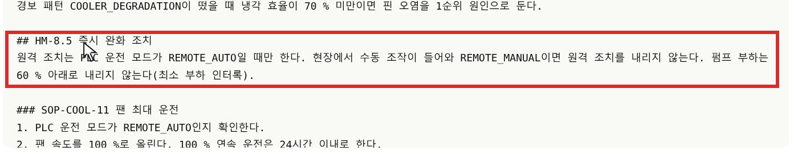
- 회복 판정 · 근본 조치 · 금지와 제한: 조치 뒤 15분 동안 유온이 55 ℃ 밑으로 내려오고 경보가 풀리는지 봅니다. 근본 조치는 원인을 없애는 정비이고, 맨 아래 금지와 제한은 조치를 고를 때 지켜야 할 것입니다.
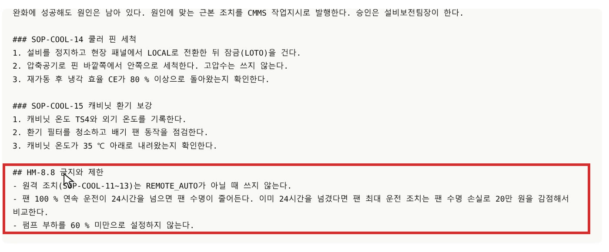
확인: 판정 기준의 두 값, 원인 셋을 가르는 팬 진동 기준, 원격 조치가 되는 운전 모드를 원문에서 짚을 수 있습니다.
AI에게 정리를 맡기고 추출 경고 읽기
원문 아래 추출 제안 준비를 누르고, 옆에 안내가 뜨면 추출 진행 · 결과 확인을 누르세요.
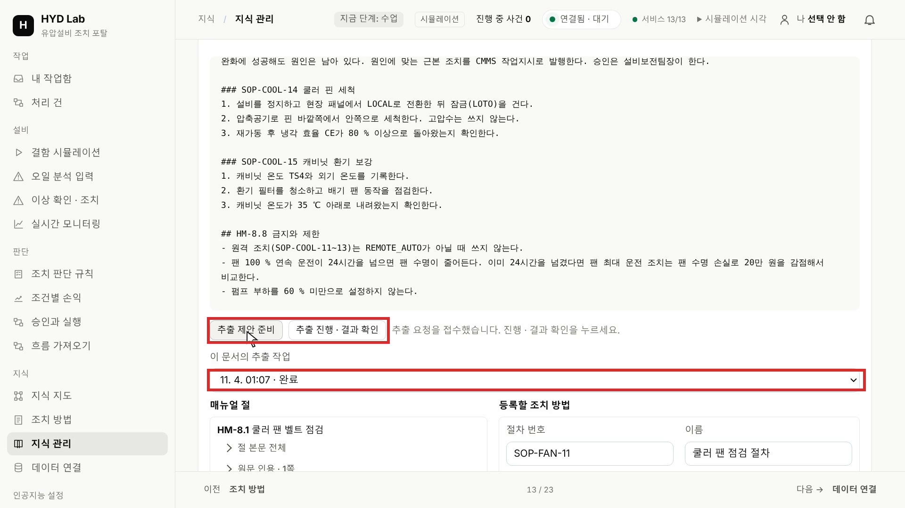
AI가 정리한 결과가 아래로 나옵니다. 사람이 확인한 것만 지식이 되므로 이것은 아직 제안입니다. AI도 잘못 읽거나 원문에 없는 것을 지어낼 수 있어서, 이 확인을 직접 합니다.
위쪽 추출 경고 3개를 펼치세요. AI가 정리하다가 사람에게 남긴 메모입니다. 섞여 있는 영어와 번호는 몰라도 됩니다.
- 하나는 팬 점검과 벨트 교체를 쿨러 고장을 고치는 일로 붙였다는 메모입니다. 원문에 어느 고장에 붙일지 정해져 있지 않아 원문을 보고 판단했다는 뜻입니다.
- 또 하나는 벨트를 언제 갈지는 규칙으로 만들지 않았다는 메모입니다. 벨트는 사람이 현장에서 보고 정하는 일이라 원문에 없는 조건을 지어내지 않은 것입니다.
- 마지막은 나머지를 원문 그대로 뒀다는 메모입니다.
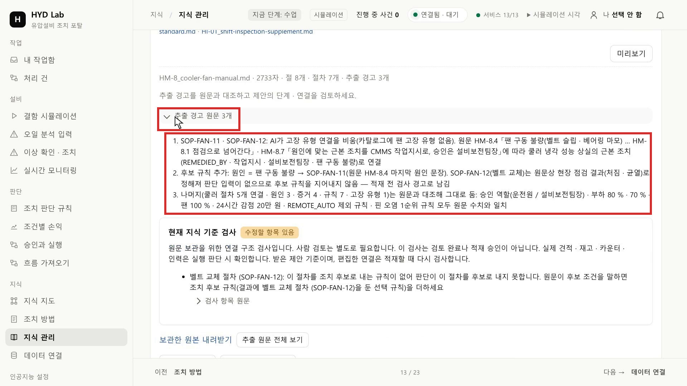
확인: 그 밑 검사 칸에는 미리보기 때 비어 있던 칸이 채워져 벨트 교체 한 줄만 남습니다. 벨트 규칙은 일부러 만들지 않았으니 그 줄이 남는 것이 맞습니다.
조치 방법을 원문과 맞춰 보기
아래 왼쪽은 매뉴얼의 절이고, 오른쪽 등록할 조치 방법은 AI가 절차 하나를 조치 하나로 정리한 것입니다. 모두 일곱 개이고, 볼 칸은 둘입니다.
- 관계: 이 조치가 급한 불을 끄는 것(즉시 완화)인지, 원인을 없애는 것(근본 조치)인지
- 종류: 설비에 명령을 보내는 것(설비 제어)인지, 사람에게 정비를 맡기는 것(정비 요청)인지
이 둘이 틀리면 AI가 급한 조치와 정비를 헷갈립니다. 절차의 업무 범위나 영어로 된 칸은 몰라도 됩니다.
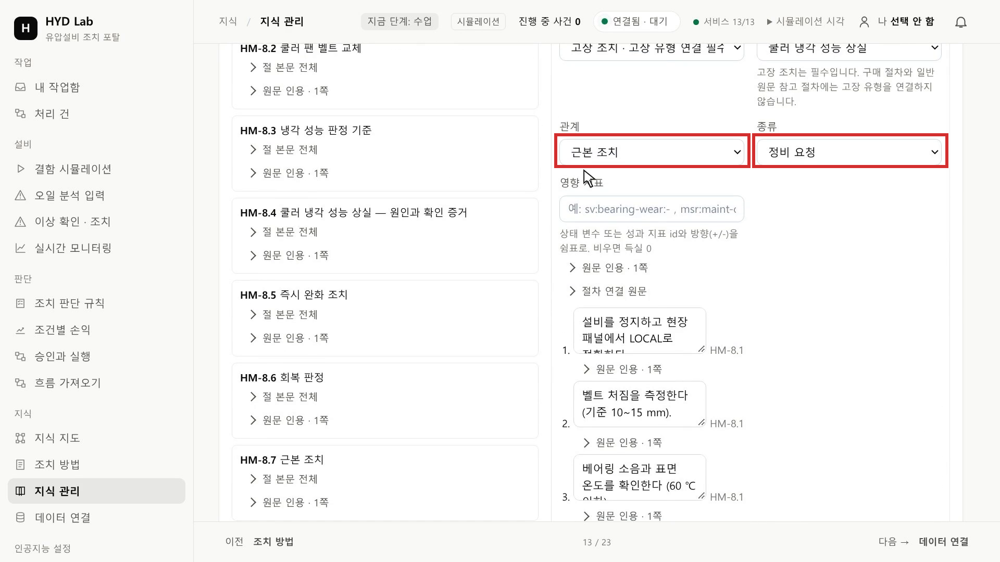
| 조치 방법 | 관계 | 종류 | 까닭 |
|---|---|---|---|
| 쿨러 팬 점검 | 근본 조치 | 정비 요청 | 사람이 팬을 손보는 일 |
| 벨트 교체 | 근본 조치 | 정비 요청 | 사람이 팬을 손보는 일 |
| 팬 최대 운전 | 즉시 완화 | 설비 제어 | 멀리서 명령으로 팬을 세게 돌려 온도부터 잡는 일 |
| 팬 최대 운전과 부하 80 % | 즉시 완화 | 설비 제어 | 펌프 일을 줄여 부하를 낮추는 명령 |
| 부하 70 %와 야간 핀 세척 | 즉시 완화 | 설비 제어 | 펌프 일을 줄여 부하를 낮추는 명령 |
| 쿨러 핀 세척 | 근본 조치 | 정비 요청 | 사람이 설비를 세워 놓고 하는 일 |
| 캐비닛 환기 보강 | 근본 조치 | 정비 요청 | 사람이 현장에서 하는 일 |
팬 최대 운전의 원문 인용을 눌러 펼치세요. 이 조치를 매뉴얼의 어느 절차에서 뽑았는지 나오고, 밑의 작업 순서도 원문처럼 원격 자동인지 확인하는 데서 시작합니다. 이름이 같아도 이런 단계 하나가 빠지면 다른 작업이 되므로 순서까지 봅니다.
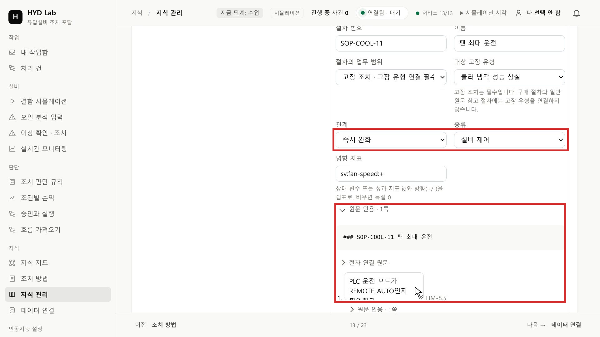
확인: 일곱 조치의 관계 · 종류와 작업 순서가 원문과 맞습니다. 원문과 다르면 원문대로 고칩니다.
지식 후보를 원문과 맞춰 보기
조치 밑의 추출한 지식 후보에는 AI가 뽑아 온 고장, 원인, 확인 증거, 규칙이 있습니다. 맨 위 고장 유형은 쿨러 냉각 성능 상실이고, 그 밑 원인 셋도 원문의 세 원인입니다.
핀 오염의 원문 인용을 펼치세요. 냉각 효율이 70 % 밑이고 팬 진동이 0.9 mm/s 밑이면 핀 오염이라는 원문 문장이 나옵니다.
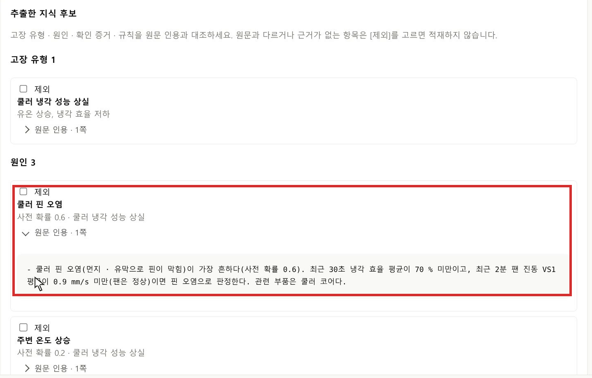
확인 증거는 그 조건을 한 줄씩 나눠 적은 것으로, 뒤에서 AI가 센서 값과 한 줄씩 맞춰 보는 데 씁니다. 줄마다 볼 것은 두 가지입니다. 미만이 이상으로 바뀌지 않았는지, 그리고 줄 앞의 시간(최근 30초, 최근 2분)이 원문과 같은지입니다. 값은 순간순간 튀므로 그 시간 동안의 평균으로 봅니다.
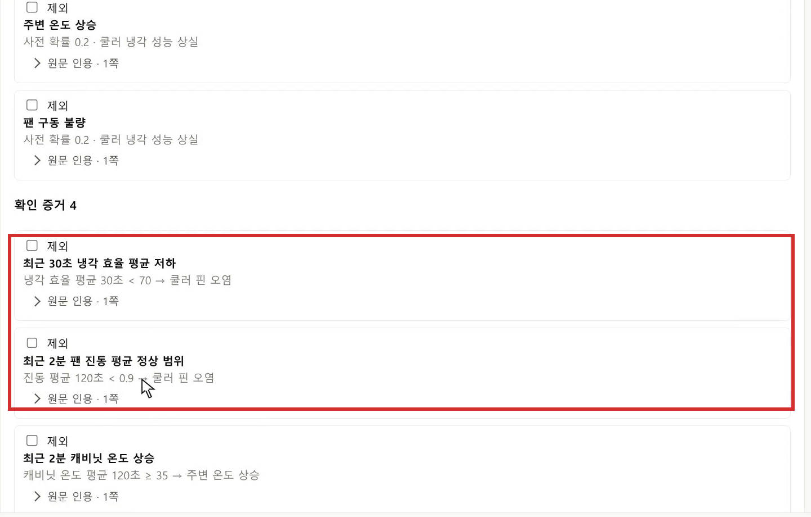
규칙은 「이럴 땐 이렇게 하라」는 약속입니다. 규칙에 나오는 COOLER_DEGRADATION(쿨러 성능 저하)은 경보에 붙는 이름이고, 이 경보가 가리키는 고장이 쿨러 냉각 성능 상실입니다. 첫 줄은 이 경보가 오고 냉각 효율이 70 % 밑이면 핀 오염부터 의심하라는 규칙이고, 다음 줄은 그 경보가 오면 즉시 완화 세 가지를 고를 거리로 올려 두라는 규칙입니다. 미리보기 검사 칸에서 없다던 것이 이 규칙입니다.
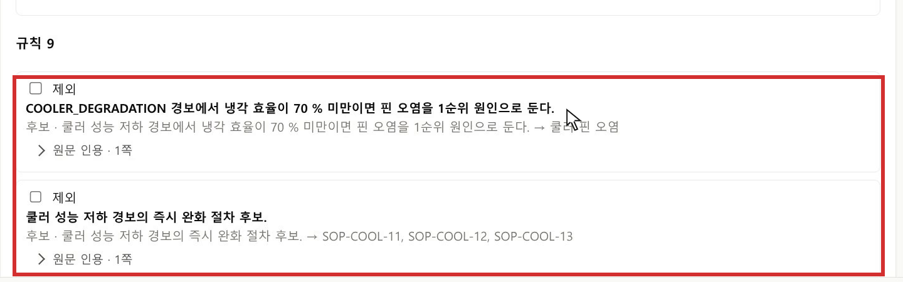
줄마다 붙은 제외 칸은 원문과 다른 줄이 있을 때 체크해 그 줄만 빼고 넣는 칸입니다. 다 맞으면 비워 둡니다.
확인: 원인 셋의 원문 문장, 확인 증거 넷의 미만 · 이상과 시간이 원문과 맞습니다.
검토 표시하고 지식으로 적재하기
맨 아래 원문 · 단계 · 고장 유형 · 관계를 검토했습니다에 체크하세요. 사람이 확인했다는 표시입니다. 그리고 검토한 내용 적재를 누르세요.
확인: 적재 완료와 함께 절 · 조치 방법 · 단계 수와 후보 규칙에 연결된 고장이 나옵니다. 강사 화면에서는 절 8 · 조치 방법 7 · 단계 25, 쿨러 냉각 성능 상실이었습니다. 제외한 줄이 있으면 수가 그만큼 다릅니다. 아래 등록된 매뉴얼 맨 위에도 쿨러 팬 매뉴얼이 현재 판본으로 올라옵니다.
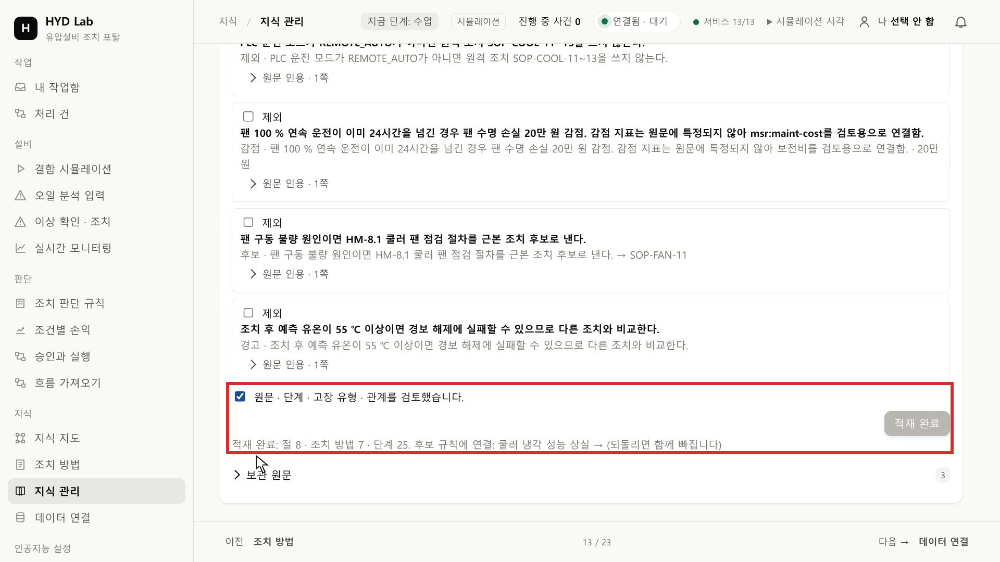
지식 지도에서 고장에 이어진 것 보기
AI는 지식 지도의 선을 따라 원인과 조치를 찾아갑니다. 왼쪽 지식 지도를 누르고, 위 검색 칸에 쿨러를 넣은 뒤, 나온 것 가운데 쿨러 냉각 성능 상실을 누르세요.
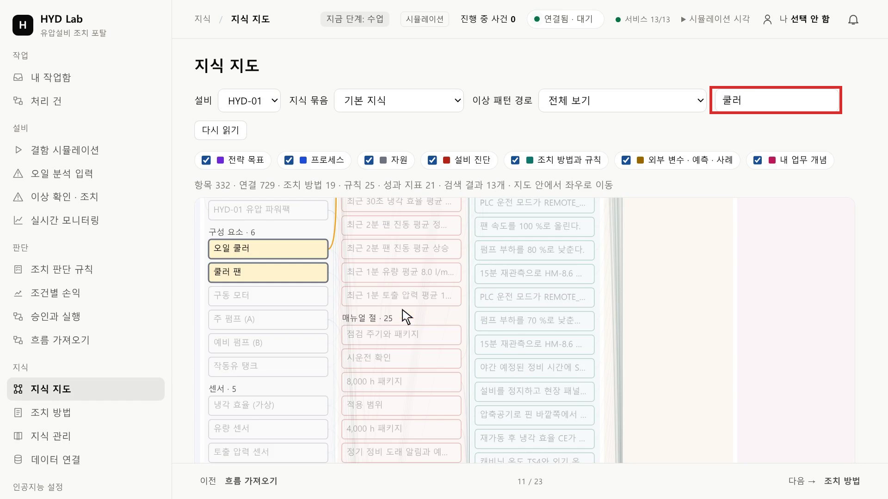
아래 칸이 이 고장에 선으로 이어진 것들입니다. 선을 하나하나 읽는 법은 다음 회차에서 자세히 보고, 오늘은 무엇이 붙어 있는지만 봅니다.
- 들어오는 관계: 쿨러 핀 오염 · 주변 온도 상승 · 팬 구동 불량이 이 고장을 일으키는 원인이고, 유온 상승과 냉각 효율 저하가 이 고장을 나타내는 증상입니다.
- 나가는 관계: 팬 최대 운전, 쿨러 핀 세척 같은 조치들과, 이 고장이 생기는 자리인 오일 쿨러가 있습니다.
고장 자체는 눈에 보이지 않고 화면에 보이는 것은 증상뿐입니다. 그래서 AI는 증상에서 출발해 이 고장을 찾고, 그 원인을 찾고, 이 고장에 붙은 조치를 꺼내 옵니다. 선을 이렇게 이어 둔 까닭입니다.
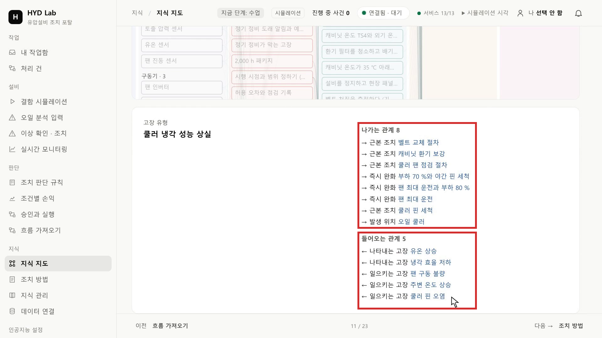
확인: 들어오는 관계에 원인 셋, 나가는 관계에 즉시 완화와 근본 조치가 있습니다.
쿨러에 고장 내기
왼쪽 결함 시뮬레이션을 누르세요. 고장을 내기 전에 HYD-01 카드에서 멀쩡할 때의 값을 읽어 둡니다. 그래야 무엇이 달라지는지 압니다. 강사 화면에서는 유온 48.0 ℃, 냉각 효율 84 %, 팬 진동은 0.9 mm/s보다 한참 낮았고, 오른쪽 위는 원격 자동이었습니다. 매뉴얼에서 원격 조치는 이 상태일 때만 한다고 했습니다.
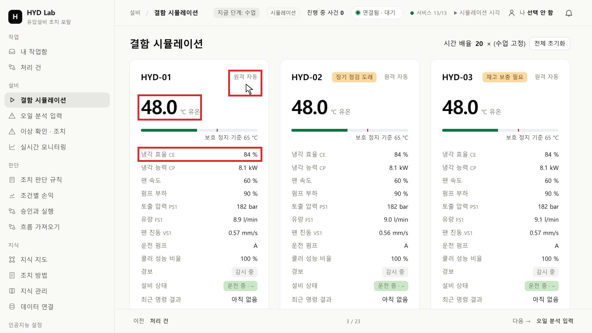
카드 아래쪽 쿨러 열화 주입을 한 번 누르세요.
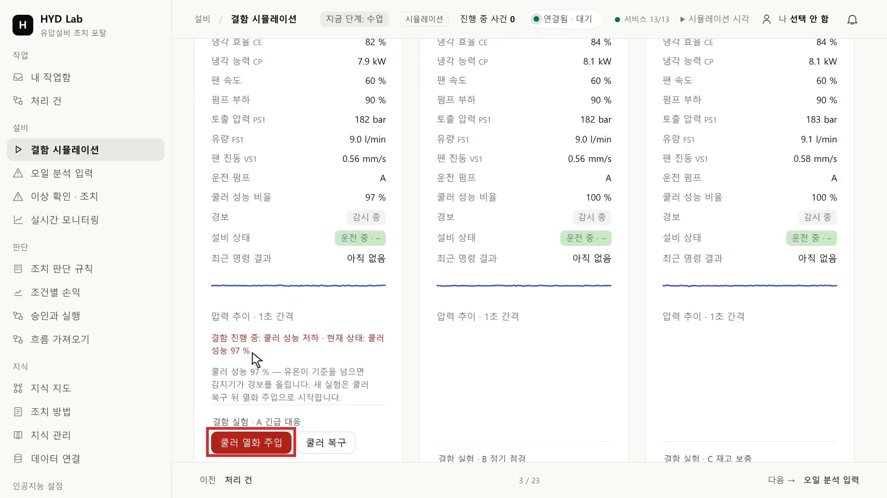
화면을 그대로 두고 지켜보세요.
- 쿨러 성능 비율(쿨러 자체의 상태)이 먼저 떨어지고, 그 결과로 위의 냉각 효율도 내려가 70 % 밑으로 들어옵니다. 팬 진동은 여전히 낮으니 매뉴얼대로라면 핀 오염 쪽입니다.
- 기름이 덜 식으니 유온이 천천히 오르고, 숫자 아래 막대(보호 정지까지 남은 여유)도 차오릅니다.
- 유온이 55 ℃를 넘으면 경보 칸이 이상 징후였다가 경보 발생으로 바뀝니다. 값이 잠깐 튄 것으로 경보를 울리지 않도록 그 상태가 계속되는지 조금 지켜본 뒤 경보를 냅니다. 이 설비는 시간이 실제보다 스무 배 빨리 흘러서, 강사 화면에서는 누른 뒤 1분 안쪽에 경보 발생이 됐습니다.
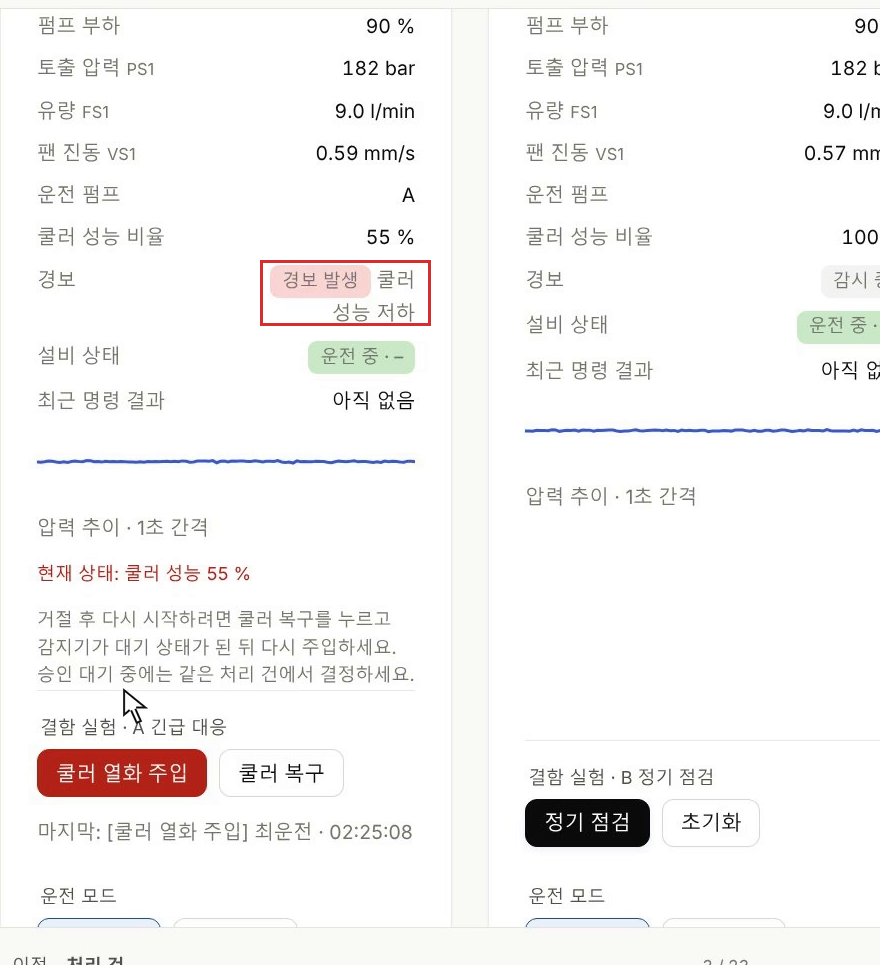
처리 건에서 진행 상황 보기
경보가 났으면 왼쪽 처리 건을 누르세요.
위 내 차례에는 지금 사람이 할 차례인 일이 뜹니다. 운전원 승인이 하나 올라와 있고, 그 밑에 크게 뜬 것이 그 승인 요청입니다.
아래 목록에는 냉각 긴급 대응 HYD-01이 새로 생겼습니다. 경보가 들어오자 처리 건이 하나 열린 것이고, 이 고장이 끝날 때까지 일어나는 일이 모두 이 안에 남습니다. 그 밑의 건은 앞에서 매뉴얼 정리를 맡긴 일입니다.
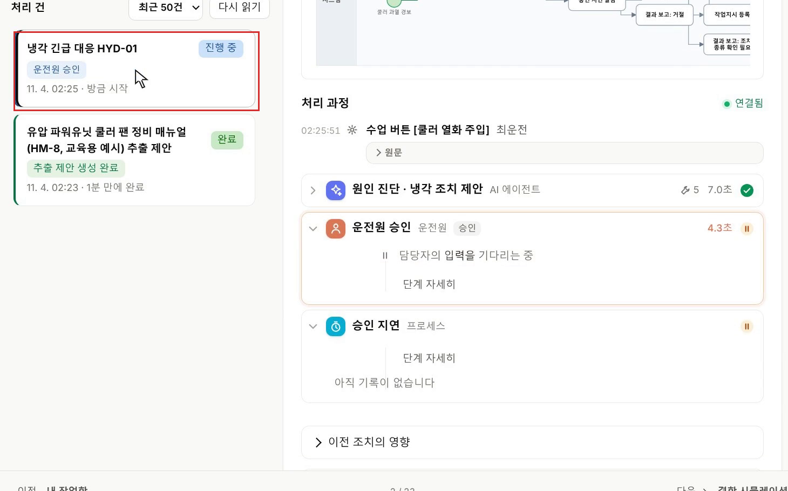
오른쪽 진행 상황 그림을 보세요.
확인: 에이전트 줄의 원인 진단 · 냉각 조치 제안이 초록으로 끝나 있고, 담당자 줄의 운전원 승인에서 멈춰 있습니다. 위에는 운전원 선택을 기다리는 중이라고 나옵니다. 누가 운전원으로 승인할지가 아직 정해지지 않았다는 뜻입니다. AI가 고른 것을 해도 될지는 사람이 정해야 하므로 설비로는 아직 아무것도 가지 않았습니다.
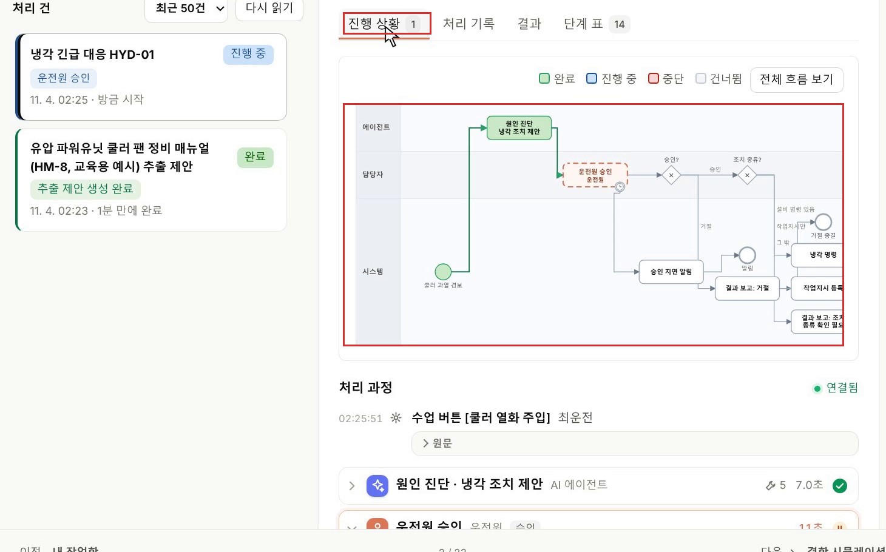
승인 요청 읽기
위로 올라가 승인 요청을 읽으세요. 아래는 강사 화면의 예이고, 추천안과 순위는 실행할 때마다 다시 계산되므로 다를 수 있습니다.
- 승인 요청 옆에는 지연 알림까지 남은 시간이 있습니다. 그 안에 아무도 승인하지 않으면 알림이 갑니다.
- 맨 위에 크게 적힌 것이 첫 번째로 꼽힌 조치입니다. AI가 짚은 원인과 근거로 판단 엔진이 순위를 매겼습니다.
- 그 밑에 이 조치를 하면 유온이 어디까지 내려갈지 예상한 값, 좋아지는 것과 감수할 것, 승인하면 시스템이 할 일, 이 판단의 출처(앞에서 넣은 매뉴얼)가 있습니다. 승인하는 사람이 얻는 것과 치를 것을 같이 보고 정하라고 나란히 보여 줍니다.
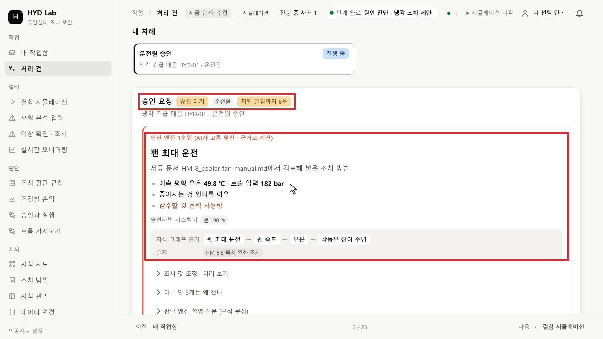
접힌 칸 가운데 다른 안 3개는 왜 졌나를 펼치세요. 강사 화면에서는 부하를 낮추는 안들이 온도는 더 내려가지만 생산이 줄어서 졌고(매뉴얼 절차 끝의 생산 이야기가 여기서 쓰입니다), 핀 세척은 설비를 세워야 해서 뒤로 밀렸습니다. 오른쪽 이 안으로 바꾸기를 누르면 다른 안으로 바꿔 승인할 수 있지만, 이번 실습에서는 고른 대로 승인합니다.
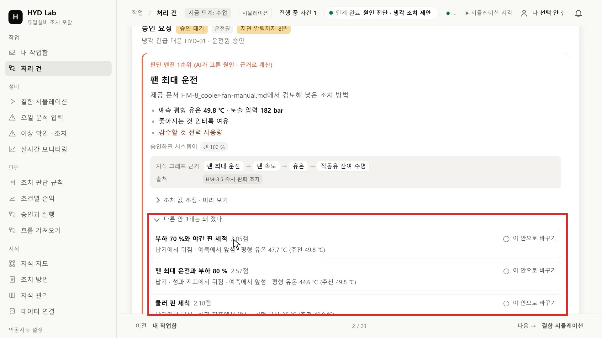
확인: 맨 아래 승인 버튼이 흐립니다. 승인에는 누가 했는지가 남아야 하므로 먼저 나를 고르라고 나옵니다.
운전원을 고르고 승인하기
이 승인 요청은 운전원이 승인하는 일입니다. 왼쪽 내 작업함을 누르고, 나 칸에서 최운전 · 운전원을 고르세요. 포털에 미리 등록해 둔 운전원입니다.
확인: 밑의 내 작업에 운전원 승인이 와 있습니다.
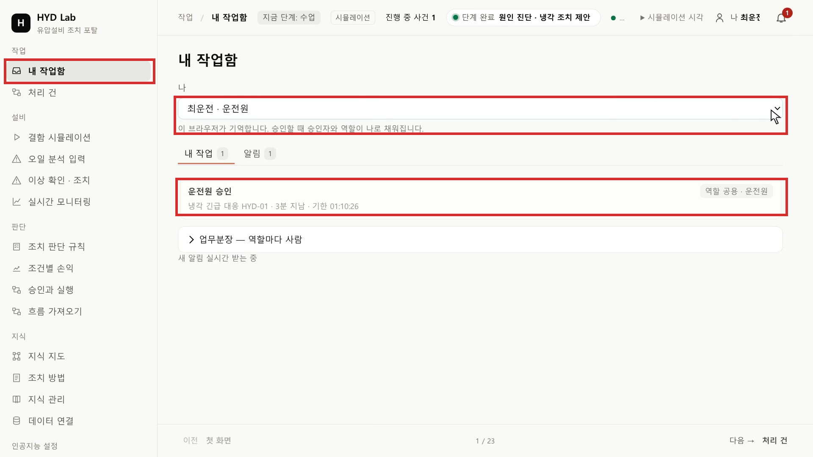
다른 안까지 펼쳐 본 그 승인 요청에서 승인하려고 왼쪽 처리 건으로 돌아갑니다. 승인 요청 아래 담당자에 최운전이 들어와 있고 승인 버튼이 진해졌습니다. 사유는 거절할 때 쓰는 칸이라 비워 두고 승인을 누르세요.
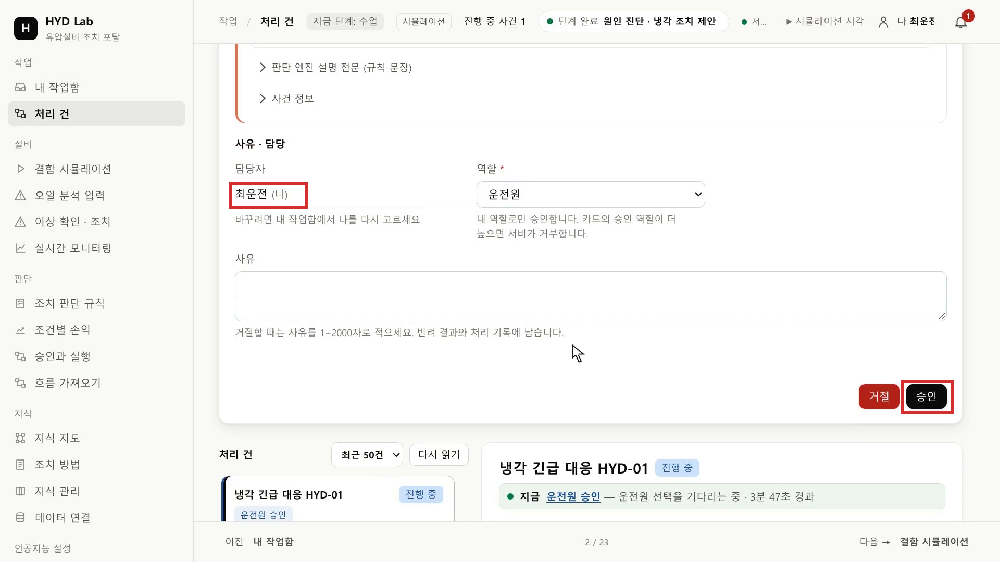
승인 뒤 처리 과정 지켜보기
승인한 뒤로는 포털이 알아서 진행합니다. 아래 처리 과정을 보세요.
- 운전원 승인에 체크가 붙고, 앞에서 본 지연 알림은 필요 없어져 꺼집니다.
- 냉각 명령이 붙습니다. 승인한 조치가 명령이 되어 설비로 갔고, 설비가 처리했다고 답한 것입니다.
- 지금은 재관측(다시 재 보는 단계)입니다. 명령이 갔다고 온도가 바로 내려가지는 않으므로 정말 식는지 지켜봅니다.
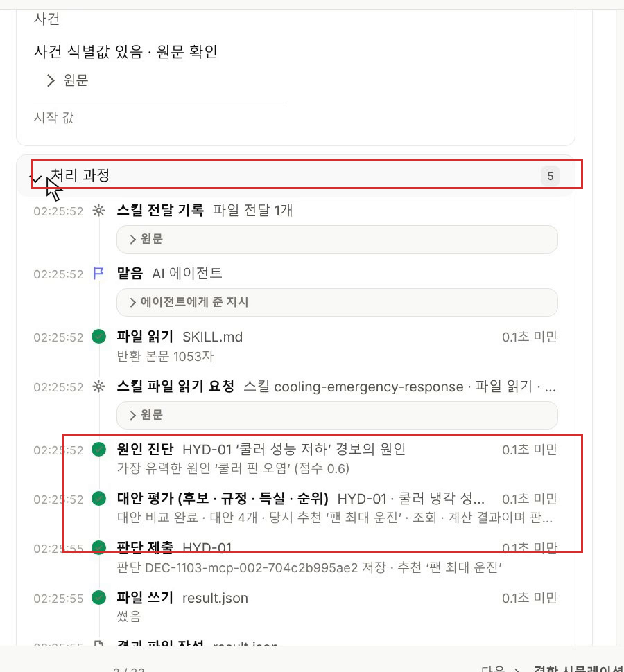
매뉴얼대로 15분을 지켜보는데, 시간이 스무 배 빨리 흘러서 실제로는 1분쯤입니다. 위에 재측정까지 남은 시간이 보입니다. 시간이 다 지나면 다시 잰 유온과 경보로 회복인지 판정합니다. 중간에 영어로 찍히는 줄은 몰라도 됩니다.
확인: 처리 건 위에 끝이 뜨고, 이 건이 마무리됩니다.
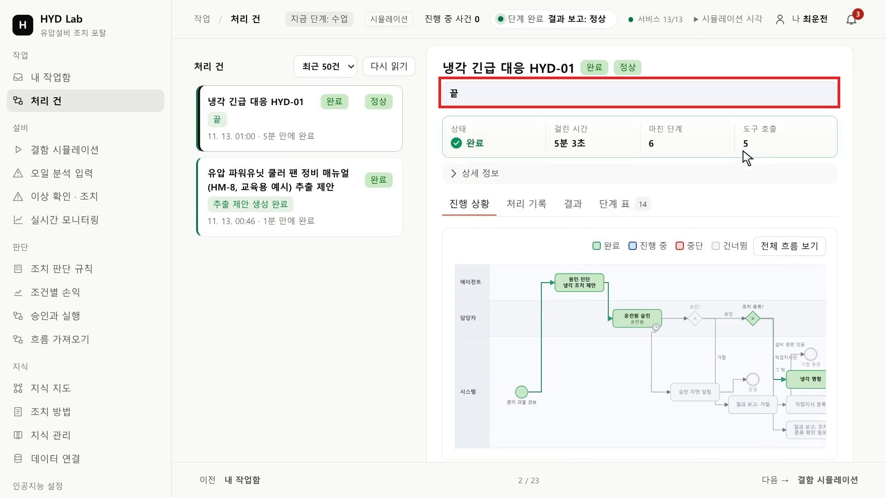
처리 기록으로 처음부터 따라가기
처리 기록 탭을 누르세요. 누가 언제 무엇을 했는지가 단계마다 한 줄로 남아 있습니다.
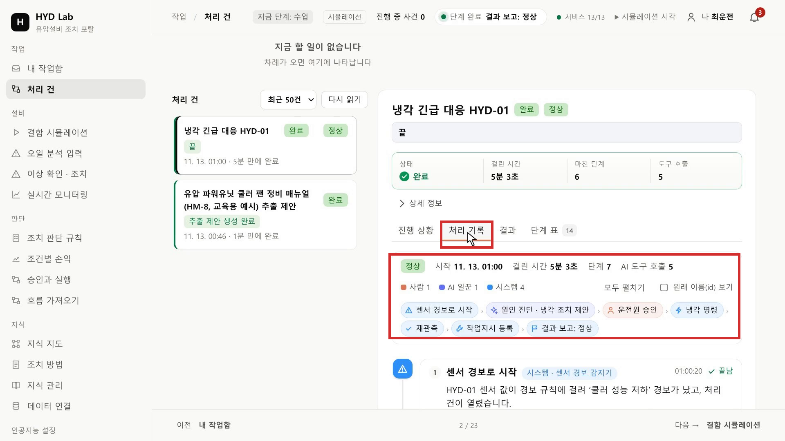
- 센서 경보로 시작: 경보가 울린 그때의 값이 붙어 있습니다. 냉각 효율은 70 % 밑, 유온은 55 ℃ 위로, 매뉴얼 기준에 들어온 값입니다.
- 원인 진단 · 냉각 조치 제안: 이론에서 본 판단 기록이 여기 남습니다. 강사 화면에서는 원인이 쿨러 핀 오염, 추천이 팬 최대 운전이었습니다.
왜 그렇게 봤는지는 모두 펼치기를 누르면 안에 다 있습니다. 위의 긴 자료 표는 몰라도 되고, 조금 내려서 지식 경로를 보세요. 경보에서 증상으로, 증상에서 고장으로 가서 그 고장을 일으킨 원인을 찾았습니다. 지식 지도에서 본 길을 따라간 것입니다.
그 밑 표는 원인마다 확인 증거를 센서 값과 맞춰 본 것입니다. 강사 화면에서는 핀 오염 줄이 팬 진동도 낮고 냉각 효율도 70 % 밑이라 두 줄 다 맞음, 다른 두 원인은 아님이었습니다. 원문과 맞춰 넣은 그 확인 증거가 여기서 쓰였고, 그래서 미만 · 이상까지 꼼꼼히 맞춰 본 것입니다.
아래 추천안에 이른 길은 원인에서 고장으로, 고장에서 즉시 완화 조치인 팬 최대 운전으로 이어집니다.
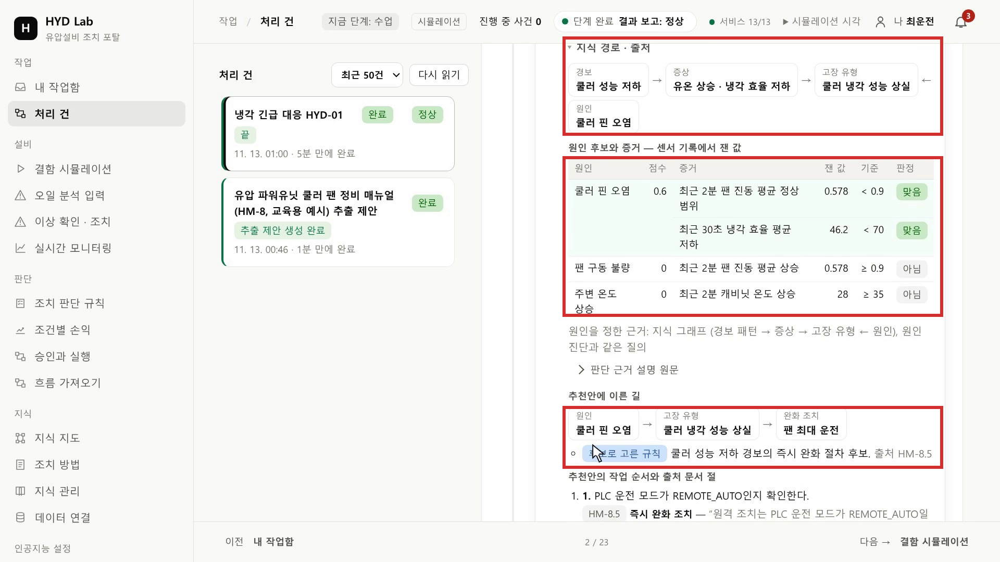
이어서 아래로 내려 가며 읽으세요.
- 운전원 승인: 최운전이 추천안 그대로 승인했다고 남아 있고, 설비에 보낼 일로 쿨러 팬 속도 100 %가 남았습니다. 팬 최대 운전이라는 조치를 설비가 알아듣는 실제 명령으로 바꿔 적은 것입니다.
- 냉각 명령: 설비가 받아서 처리했다고 답한 기록입니다. 이 답을 이론에서 확인 응답이라고 했습니다. 끝의 안전 연동은 위험한 명령을 막는 인터록이고, 여기에 걸리지 않고 들어갔다는 뜻입니다.
- 재관측: 명령 뒤에 다시 잰 유온입니다. 기름은 금방 식지 않아 처음엔 기준보다 높다가 점점 내려옵니다. 끝에 55 ℃ 밑으로 내려오고 경보도 풀려서, 매뉴얼의 회복 판정대로 회복으로 봤습니다. 값은 실행마다 다릅니다.
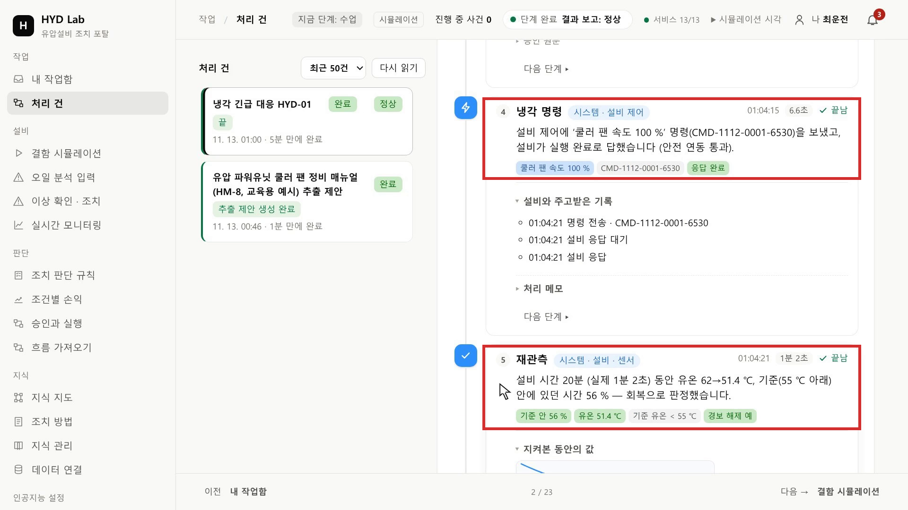
- 작업지시 등록: 정비 쪽에 일을 넘긴 단계입니다. 팬으로 급한 불은 껐지만 원인은 그대로 남아 있을 수 있으므로, 정비하는 사람이 설비를 살펴보도록 점검을 걸어 둡니다. 정비가 끝났다는 뜻은 아닙니다.
- 결과 보고: 정상: 이 건이 어떻게 끝났는지 담당자에게 알린 단계입니다. 위 알림 종에도 숫자가 붙습니다.
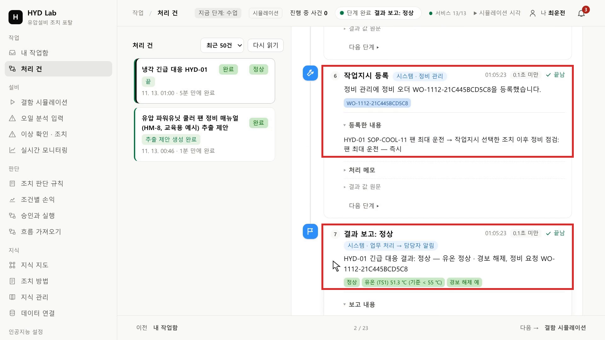
결과 탭에서 마무리 확인하기
옆의 결과 탭을 누르세요. 정상이라는 판정과 그 근거가 한눈에 보입니다. 유온이 기준 55 ℃ 아래로 내려왔고 경보 해제 칸이 예입니다. 아래에는 승인한 안과 승인한 사람, 시스템이 한 일이 모여 있습니다.
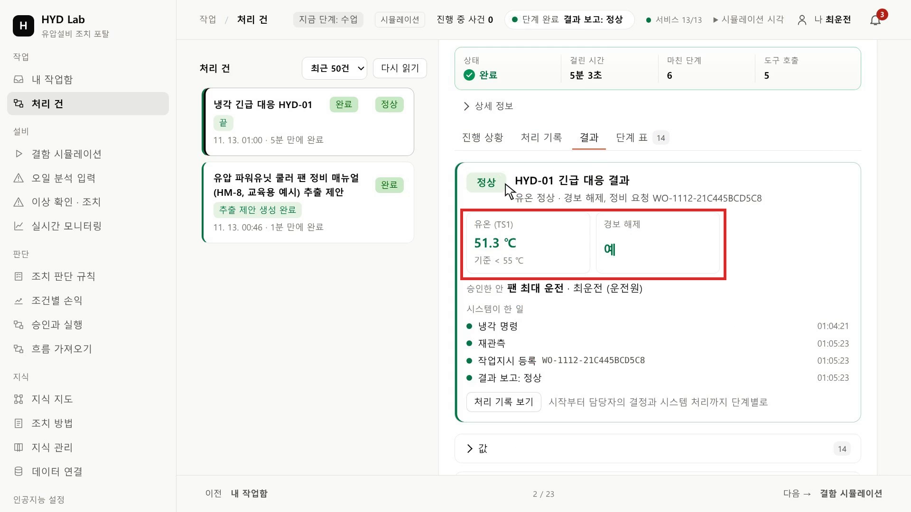
추천과 승인과 실제 조치가 각자 다른 단계로 남아 있어서, 나중에 문제가 생겨도 누가 어디서 무엇을 정했는지 처음부터 다시 따라갈 수 있습니다. 기록의 뜻은 참고 교재 발췌에 있습니다.
확인: 같은 처리 건에서 AI의 추천과 근거, 운전원의 승인, 설비의 확인 응답, 다시 잰 유온, 남은 정비 요청을 차례로 가리킬 수 있으면 이 실습을 마친 것입니다.